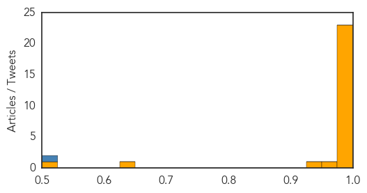
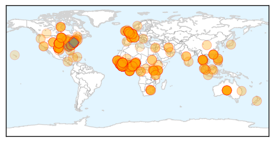

Points of Interest A Guided Tour
 Ebola Detail View - March 24 2014
Ebola Detail View - March 24 2014
 MERS Detail View - April 14 2014
Note the high confidence in the news articles that detail the spread of the virus in the Middle East. In early May, the CDC would confirm the first two cases to arrive in the USA, both in travelers who had visited Saudi Arabia.
 Ebola / Influenza Comparison View - October 7 2015
Ebola / Influenza Comparison View - October 7 2015
 Ebola Detail View - July 31 2014
The full-blown outbreak is under way. The WHO declared a public health emergency 8 days later. At this point, the death toll was 729. More than 10000 people would die during the year to follow.Not all outbreaks are wide-spread and fatal. The mumps outbreak that began on a University of Illinois campus ultimately grew to more than 80 confirmed cases. Mumps is highly contagious, especially when people live in close quarters such as dorm rooms.